Made 16 Oct 2026, 19:39 AEDT from branch claude/design-book-20261016. Proposals, not approved. Synthetic people and places; property photos are stand-ins (credits at the foot). Desktop-browser renders at phone size, not Luke's phone.
Round 10, proposed
Every screen from rounds 7 to 9, drawn in the approved look. The approved screens
Today
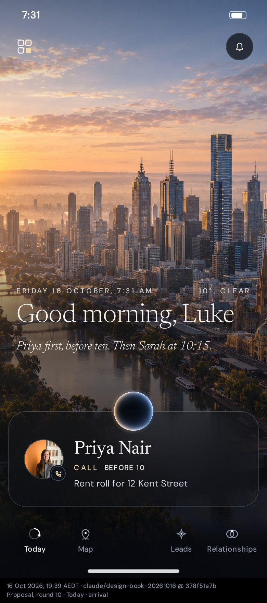
Arrival, 7:31 amThe greeting over the morning photograph; the first thing to do sits on the card, the orb on its edge.
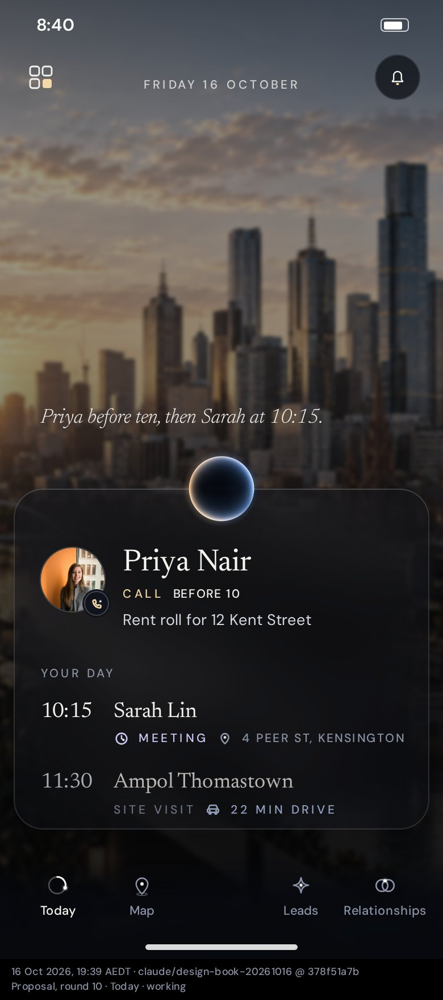
Working, 8:40 amThe greeting steps aside. Priya stays the main object; the next-up list replaces the dot timeline.
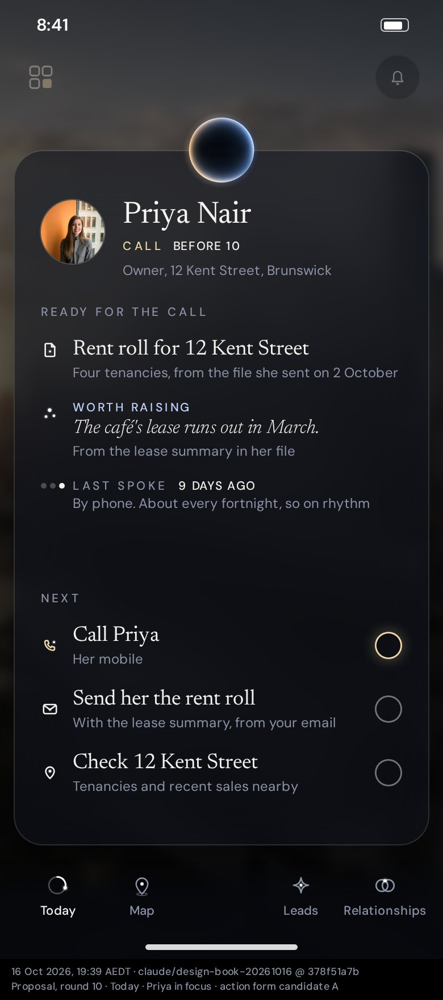
Priya in focus, candidate AFirst tap brings the card into focus: what was prepared, then her actions as rows, each with a ring at the right.
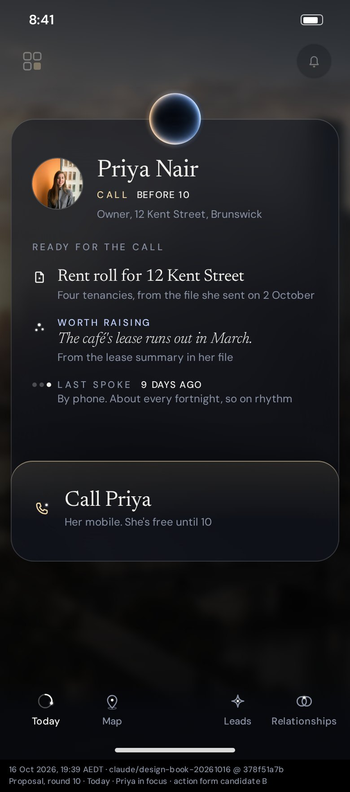
Priya in focus, candidate BThe same, with the one next action rising from the card's own edge. Second tap calls.
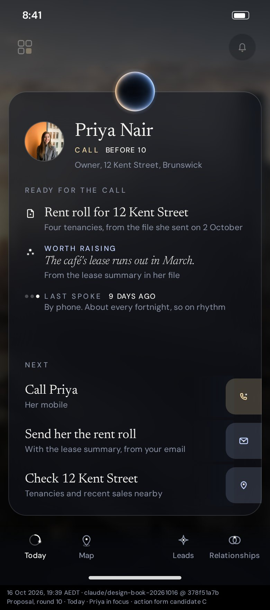
Priya in focus, candidate CThe same, with each action's mark held in a lit tile on the card's right edge.
Today, Sarah's meeting
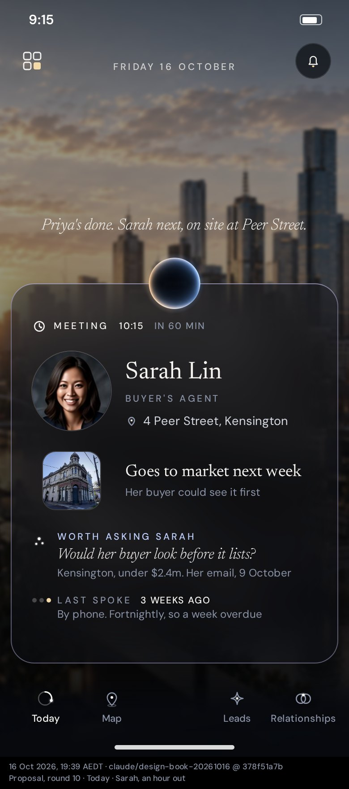
An hour out, 9:15 amPrep. Her photo is the anchor; the place in full; the listing's own photo; what to ask her and where it came from; when you last spoke.
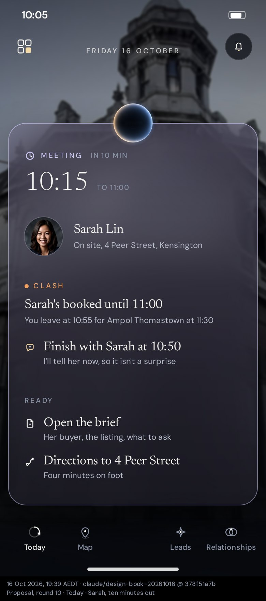
Ten minutes out, 10:05 amThe time and quick actions come forward; the countdown goes quiet; the card fills with the meeting's colour; the clash is caught with its fix.
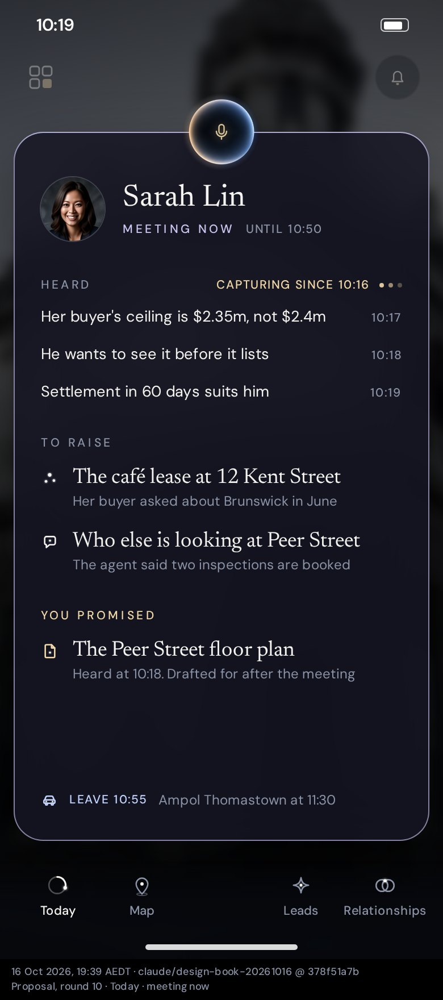
Meeting now, 10:19 amThe meeting takes the screen. What was heard, what to raise, what you promised. The orb is ready to listen. The fix carries through: it ends at 10:50.
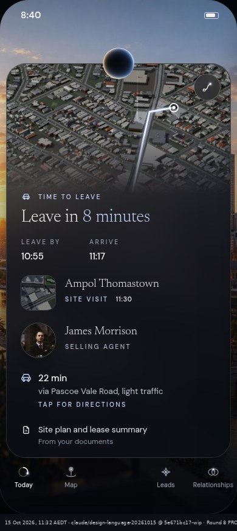
Time to leave, 10:47 amThe approved round 8 picture, unchanged.
Today, later
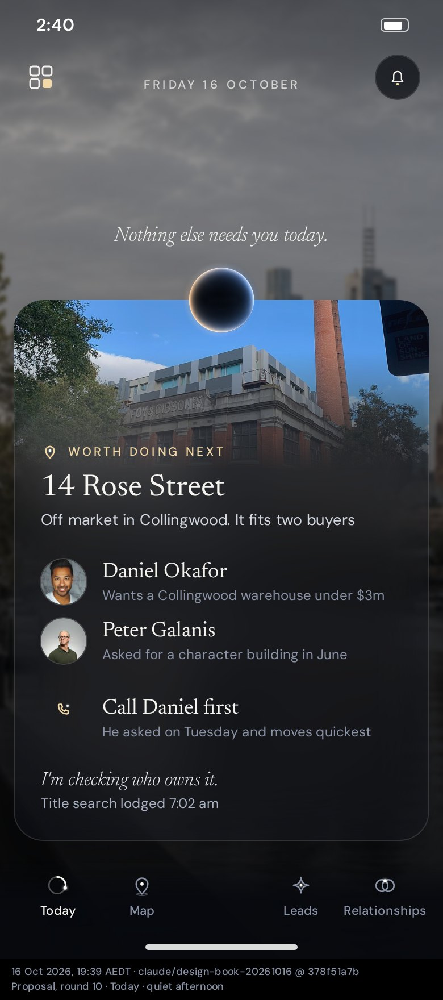
Quiet afternoon, 2:40 pmNothing needs you, so the best next move is the main object, with what Command is doing on it.
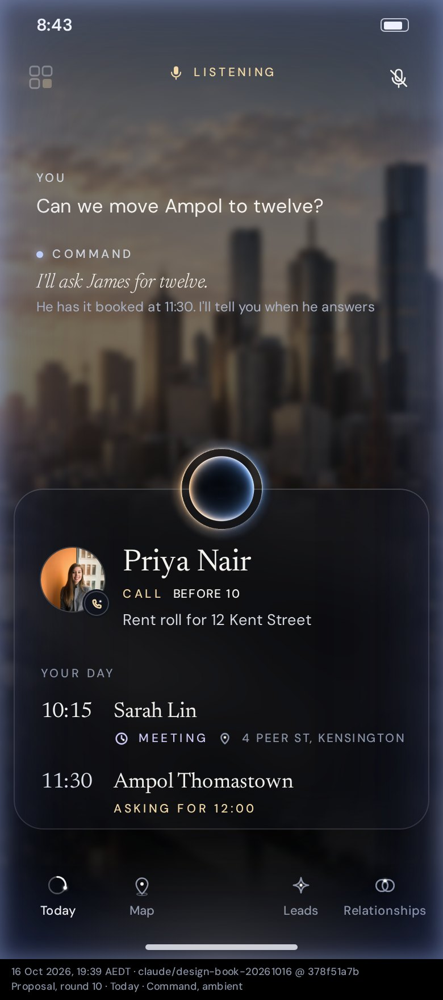
Command, ambientToday stays put; the edges carry Command's light; listening and mute at the top; your words and Command's each labelled.
Your week
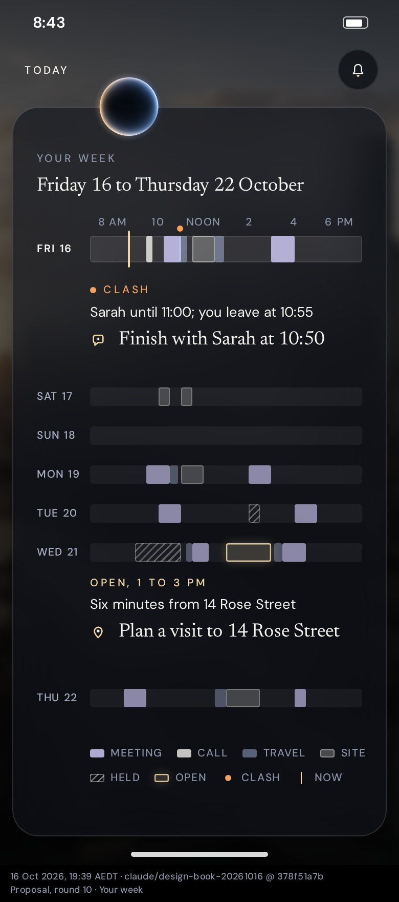
Friday 16 to Thursday 22 OctoberSeven bands, each block as long as it really is; today strongest; held time hatched; the clash and the open window sit on their day with their actions. The way back is the word Today.
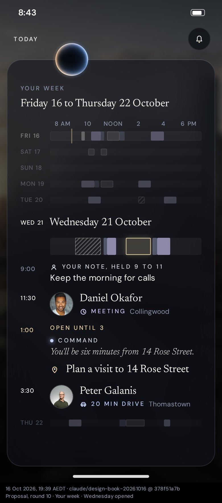
Wednesday openedTap a day and it blooms; the rest dim. Your note in your type, Command's line in its voice.
Command's work
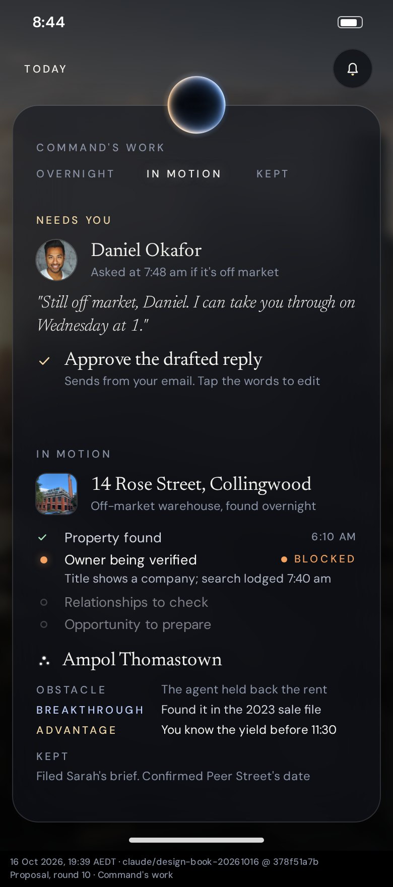
In motionOvernight, in motion, kept. What needs you first, with the action; the lead thread's stages; a breakthrough; what was finished, kept quietly.
Relationships
The circleGraphite. Real faces, one prominent and four around, his property, a note and a related person attached; who is worth reconnecting with and why.
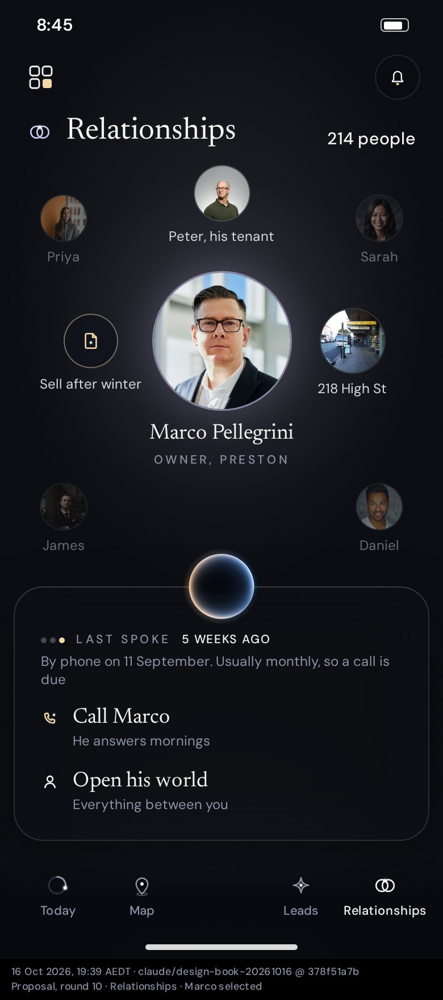
Marco selectedHis world opens around him; everyone else softens.
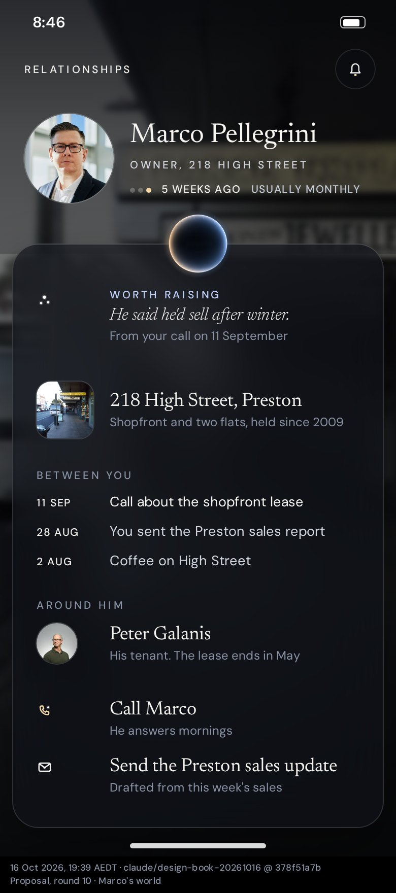
Marco's worldHis place as the backdrop; what is worth raising; his property; what has passed between you; who is around him; what to do next.
Motion
Priya comes into focusWhat leaves goes first, the card grows with the orb on its edge, what was prepared rises in.Wednesday opensThe day blooms in place; the rest dim.Marco selectedHis world opens around him; everyone else softens.
Property stand-ins from Wikimedia Commons: EG Ampol Sunshine (Marcnut1996, CC BY-SA 4.0); Former Kensington Property Exchange (Sgroey, CC BY-SA 4.0); Brunswick Franco Cozzo (Mattinbgn, CC BY 3.0); Foy & Gibson Warehouse, Collingwood (Redtree21, CC0); High Street, Preston (Pjf, CC BY-SA 3.0). Portraits are sample photos (Unsplash). Melbourne photographs as credited in the app.